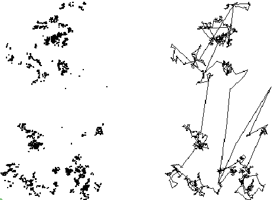

| Levy flights are random processes with these properties. |
| 1. They are stationary. |
| 2. They have independent increments. |
| 3. With probability one, they are discontinuous and have infinite standard deviation. |
| On the right we see a path traced out by a Levy flight; on the left, the turning points. |
|  |
Return to Levy flights.